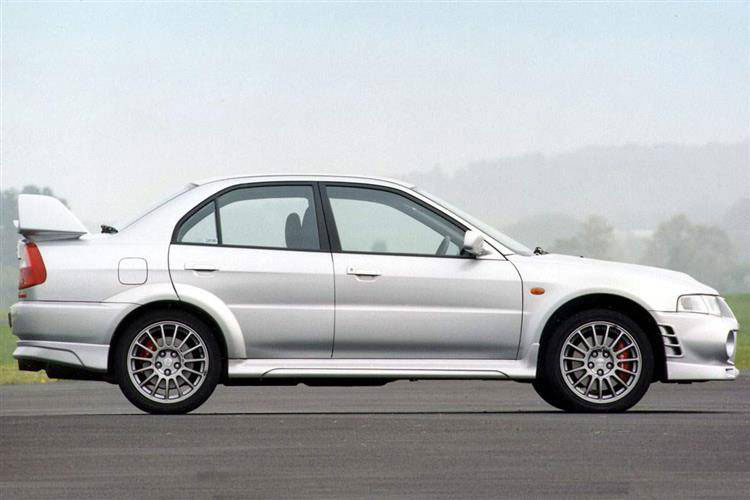

5 Mobil JDM Paling Populer di Era 90-an, Ada yang Tampil di The Fast and the Furious hingga
Initial D!!!
Siapa yang tak kenal sama mobil-mobil JDM keren era 90-an? Artikel ini bakal ngajak lo buat
nostalgia sama lima mobil
legendaris dari Jepang yang bikin hati penggemar otomotif berdebar-debar. Dari Toyota Supra yang
nge-hits sampe Nissan
Skyline yang jadi ikon, kita bakal jalan-jalan ke dunia mesin, desain keren, dan semua hal seru
yang nempel sama
mobil-mobil ini.
Gak cuma sekadar jadi mobil klasik, tapi kita bakal bahas kenapa mobil-mobil ini masih bikin
hati orang klepek-klepek
sampe sekarang. Ada cerita unik di balik setiap mobil, mulai dari Mazda RX-7 yang punya gaya
unik sampe Honda NSX yang
jadi game-changer. Plus, kita gak lupa ngebahas Subaru Impreza yang tetep jadi favorit para
petrolhead.
Jadi, siap-siap aja buat jalan-jalan ke masa lalu otomotif sama artikel ini. Gak cuma buat yang
suka mobil, tapi juga
buat yang pengen tau gimana mobil-mobil JDM era 90-an nyetak sejarah di dunia otomotif. Yuk,
simak bareng-bareng!
1. Nissan Skyline GT-R 'R34'
Pencinta otomotif pastinya langsung ingat bahwa Nissan GT-R R34 adalah mobil sport
legendaris dari Jepang. Nissan
Skyline GT-R menjadi grand tourer yang merupakan salah satu generasi Nissan Skyline.
Seri GT-R sejatinya telah diproduksi pada tahun 1969–1973. Setelah 16 tahun, GT-R kemudian
muncul tahun 1989 dengan
mulai meluncurkan Skyline R32. Nissan GT-R R34 sendiri adalah mobil sport yang diproduksi
dari tahun 1999 sampai 2002.
Sebelumnya tentu Nissan telah
meluncurkan seri R33.
R34 menjadi generasi keempat dari seri Nissan Skyline GT-R dan merupakan salah satu mobil
sport terkenal di dunia. Oleh
majalah otomotif Inggris, Top Gear, mobil ini disebut sebagai satu-satunya kontribusi Jepang
di dunia mobil super.
Jeremy Clarkson disebutkan bahwa mobil ini merupakan salah satu yang terbaik di dunia.
2. Toyota Supra 'MK4'
Toyota Supra tentu menjadi mobil JDM yang tidak asing lagi bagi penyuka otomotif. Model
'MK4' bisa dibilang menjadi
salah satu mobil legendaris dari Toyota.
Mobil ini bahkan muncul dalam franchise Fast and Furious yang ditunggangi sang pemeran utama
Brian O’Conner yang
diperankan mendiang Paul Walker.
Supra MK4 terakhir kali diproduksi pada tahun 2002. Mobil ini Toyota dibekali mesin 3.000 cc
JZ Series yang mampu
menghasilkan tenaga puncak 320 hp dan torsi maksimum 427 Nm.
3. Honda NSX
Honda NSX adalah mobil sport coupe bermesin tengah dengan dua tempat duduk yang diproduksi
oleh Honda. Saat dipasarkan
di Amerika, mobil ini dikenal sebagai Acura NSX.
Asal usul jejak NSX sejatinya telah lahir sejak tahun 1984, dengan konsep HP-X (Honda
Pininfarina eXperimental). Ini
adalah mobil sport dengan penggerak roda belakang dan bermesin 3.0 L V6.
Komitmen Honda pada proyek NSX adalah untuk memenuhi atau melampaui kinerja jajaran mesin V8
Ferrari saat itu, sambil
menawarkan keandalan dan titik harga yang lebih rendah. Benar saja, Honda NSX menjadi mobil
JDM yang cukup populer di
era 90-an.
4. Mazda RX7
Mazda RX-7 adalah mobil sport yang diproduksi oleh Mazda sejak tahun 1978 hingga 2002. RX-7
pada awalnya memakai mesin
wankel rotary berkapasitas silinder 1.146 cc (69,9 cu in) dengan penggerak roda belakang.
RX-7 adalah tipe yang menggantikan RX-3. RX-7 awalnya adalah mobil sport dengan lampu utama
yang tersembunyi dan hanya
tersedia dengan versi coupé 2 kursi.
Mazda RX-7 semakin populer ketika dikenal melalui berbagai media kultur pop. Sebut saja
seperti serial The Fast and the
Furious, Need for Speed, Initial D, Wangan Midnight, Forza Motorsport hingga Gran Turismo
yang menampilkan mobil ini.
4. Mitsubishi Lancer Evo VI

Mitsubishi Lancer Evolution VI GSR Tommi Mäkinen Edition (CP9A) adalah bagian dari generasi
keenam Mitsubishi Lancer
Evolution . Ini sering dikenal sebagai Lan Evo , atau sebagai Evo VI.
Mitsubishi Lancer Evo VI adalah sedan sport yang diproduksi oleh pabrikan Jepang, Mitsubishi
Motors dari tahun 1992
hingga 2016. Berbasis Mitsubishi Lancer, Lancer Evolution VI dirilis dari tahun 1999 hingga
2001.
Edisi khusus yang disebut Edisi Tommi Mäkinen dirilis pada akhir 1999. Nama Tommi Mäkinen
adalah nama seorang pembalap
reli Finlandia yang telah memenangkan 4 kejuaraan pembalap WRC untuk Mitsubishi.